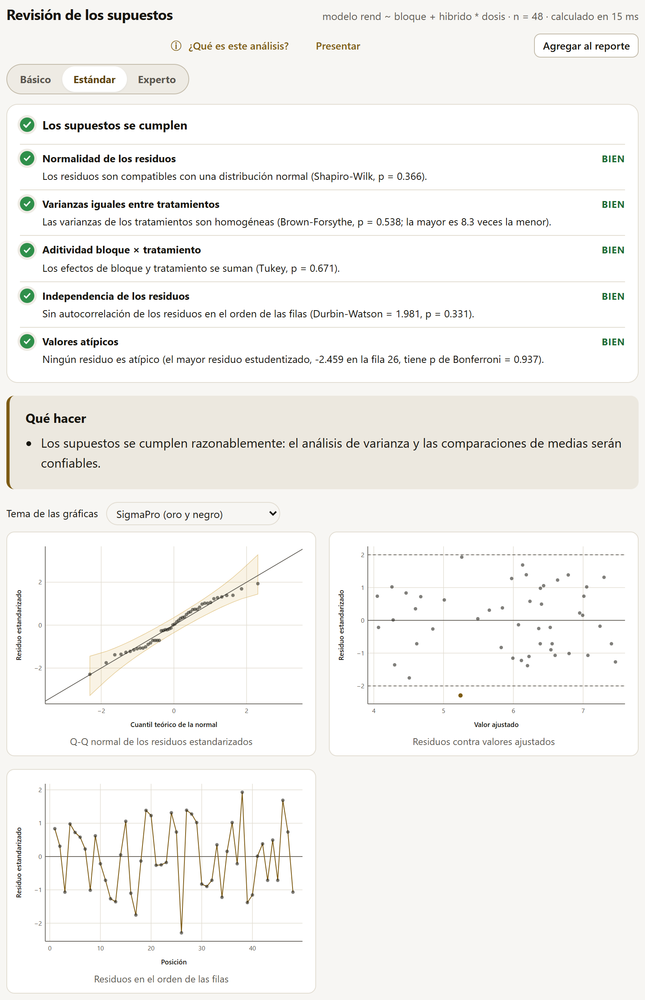
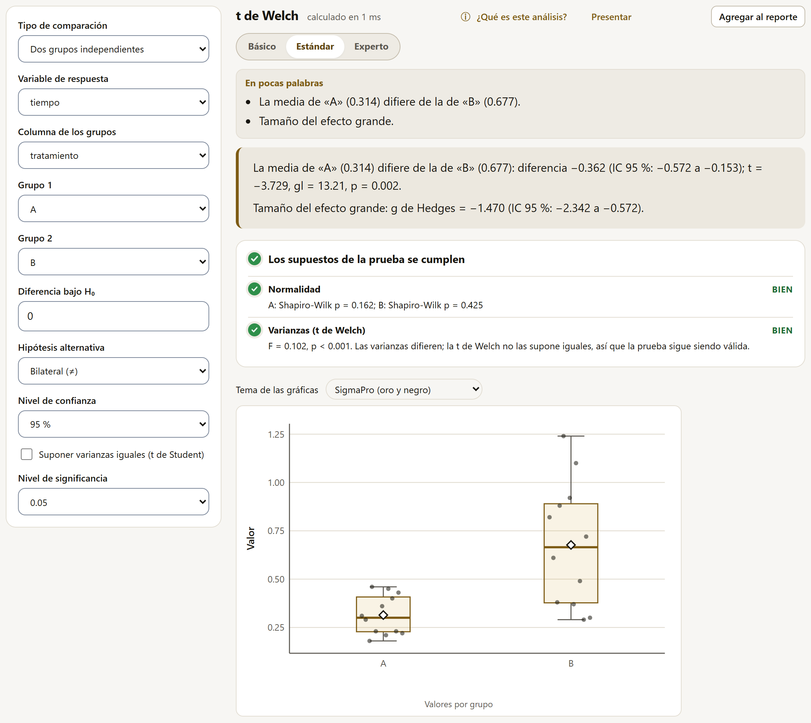

4.7Los supuestos del modelo
El análisis de varianza, las comparaciones de medias y la regresión descansan en supuestos sobre los residuos (lo que el modelo no explica): que se distribuyan como una normal, que tengan la misma varianza en todos los tratamientos, que sean independientes entre sí y que ninguno sea extremo. Revisar los supuestos del modelo, el primer método del catálogo, los pone a prueba todos a la vez y dice qué hacer si alguno falla.
| Opción | Qué decide |
|---|---|
| Variable de respuesta | La respuesta del modelo. |
| Tratamientos (hasta 3, cruzados) | Los factores; las varianzas se comparan entre sus combinaciones. |
| Bloques | El bloque, si lo hay. Con bloques se revisa además la aditividad bloque × tratamiento. |
| Orden para la independencia | En qué orden se buscan residuos vecinos parecidos: el de las filas o el de una columna (la posición en el campo, la fecha de medición). |
| Nivel de significancia | El α de las pruebas. |

El semáforo
Arriba del resultado, un renglón por supuesto, cada uno con su color, su estado y una frase con la prueba que lo decide. El color global es el del peor renglón: Los supuestos se cumplen, Hay supuestos que revisar o Hay supuestos que no se cumplen.
| Supuesto | Prueba que decide | También se calculan |
|---|---|---|
| Normalidad de los residuos | Shapiro-Wilk | Lilliefors, Anderson-Darling; la asimetría G₁ y la curtosis G₂ |
| Varianzas iguales entre tratamientos | Brown-Forsythe (Levene con la mediana) | Levene, Bartlett (sensible a la falta de normalidad), Fligner-Killeen (por rangos); cuántas veces es la mayor varianza la menor |
| Aditividad bloque × tratamiento | No aditividad de Tukey (con bloques) | — |
| Independencia de los residuos | Durbin-Watson, con su p exacto | Rachas |
| Valores atípicos | El mayor residuo estudentizado, con p de Bonferroni | — |
Los colores siguen el valor p de la prueba principal: verde si p ≥ 0.05 (BIEN), ámbar entre 0.01 y 0.05 (REVISAR), rojo si p < 0.01 (PROBLEMA). Un renglón en gris dice NO APLICA (por ejemplo, la aditividad sin bloques) o que faltan datos.
Qué hacer
Debajo del semáforo, el recuadro Qué hacer traduce el resultado en acciones concretas. Con los venenos de Box y Cox, por ejemplo, la normalidad y las varianzas fallan y hay un residuo atípico (figura 4.11): la app estima la transformación de Box-Cox con ese mismo modelo (λ = −0.816, intervalo de −1.294 a −0.341), sugiere el recíproco y recuerda que la columna original no cambia; para la fila atípica, propone revisar primero que no sea un error de captura y, si el valor es real, analizar con y sin ella y reportarlo.

Las gráficas y el cuadro
- Q-Q normal de los residuos estandarizados: si los residuos son normales, los puntos siguen la diagonal. La banda sombreada es la región de confianza; los puntos que salen de ella van marcados y los más alejados llevan su número de fila.
- Residuos contra valores ajustados: debe verse una nube sin forma. Un embudo (más dispersión con valores mayores) delata varianzas desiguales; las líneas en ±2 señalan los residuos grandes.
- Residuos en el orden de las filas o de la columna elegida: rachas largas de un mismo signo delatan dependencia (parcelas vecinas parecidas).
El cuadro 1 trae todas las pruebas, con su estadístico, sus grados de libertad, su p y qué revisa; la principal de cada supuesto va marcada. En Varianza de los residuos por tratamiento (plegado) está la varianza de cada combinación, para ver cuál es la que se aparta.

La prueba de Bartlett es muy sensible a la falta de normalidad: con residuos de colas pesadas rechaza la igualdad de varianzas aunque las varianzas sean iguales. La de Brown-Forsythe (la de Levene con la mediana en lugar de la media) es robusta a eso, y por eso decide el renglón; Bartlett queda en el cuadro como referencia. Por la misma razón, con datos muy grandes conviene mirar las gráficas además de los valores p: con miles de residuos, desviaciones mínimas de la normal ya resultan significativas.
4.8Pruebas t
La Prueba t compara medias en tres situaciones, que elige Tipo de comparación:
| Tipo | Qué pide | Ejemplo |
|---|---|---|
| Dos grupos independientes | La respuesta, la columna de los grupos y los dos niveles que se comparan (si el factor tiene más). | Tiempo de supervivencia con los tratamientos A y B. |
| Mediciones pareadas | Dos columnas medidas en las mismas unidades; se compara primera − segunda. | Altura de la misma planta a los 15 y a los 30 días. |
| Una muestra contra un valor | La variable y el valor de referencia (μ₀). | ¿La germinación media difiere del 50 %? |
Las demás opciones: la Diferencia bajo H₀ (normalmente 0), la Hipótesis alternativa (bilateral ≠, menor < o mayor >), el Nivel de confianza del intervalo y, con dos grupos, la casilla Suponer varianzas iguales (t de Student). Sin marcar, se usa la t de Welch, que no supone varianzas iguales y es la recomendada: con varianzas iguales da casi lo mismo que la de Student, y con varianzas distintas sigue siendo válida.

El resultado trae:
- la conclusión con las dos medias, la diferencia y su intervalo, y t, gl y p;
- el tamaño del efecto en palabras (pequeño, mediano, grande, según la guía de Cohen: 0.2, 0.5 y 0.8): la d de Cohen y la g de Hedges (la d corregida por el sesgo de las muestras chicas), con intervalos por la t no central (Steiger y Fouladi, 1997);
- el semáforo: la normalidad de cada grupo (o de las diferencias, en pareadas) por Shapiro-Wilk y, con dos grupos, la comparación de varianzas (prueba F), que avisa si conviene Welch;
- la gráfica de los valores por grupo (o de las diferencias pareadas);
- los cuadros: la prueba elegida (con la otra t como referencia), las medias y desviaciones, y el tamaño del efecto.
Con tres tratamientos o más, comparar de dos en dos con pruebas t infla la probabilidad de encontrar diferencias que no existen. El camino es el análisis de varianza del diseño (sección 4.10) seguido de una comparación de medias que controle ese error (sección 4.11).
4.9Pruebas no paramétricas
Cuando los datos no cumplen la normalidad y una transformación no la logra, o cuando la respuesta es una escala ordenada (daño de 1 a 5, una calificación), las pruebas de rangos comparan grupos sin suponer una distribución. Ordenan todos los valores y trabajan con su posición. SigmaPro calcula sus distribuciones exactas cuando el tamaño lo permite, como R.
| Prueba | Equivale a | Cuándo |
|---|---|---|
| Wilcoxon y Mann-Whitney | La prueba t | Dos grupos independientes (suma de rangos, Mann-Whitney), dos mediciones pareadas o una muestra contra un valor (rangos con signo). |
| Kruskal-Wallis | El ANOVA completamente al azar | Tres o más tratamientos sin bloques. |
| Friedman | El ANOVA en bloques | Tres o más tratamientos con un dato de cada uno en cada bloque (parcela, juez, fecha). |
Wilcoxon y Mann-Whitney
El formulario es el de la prueba t, con dos opciones más: Valor p (Exacto si se puede, el exacto, o la aproximación normal: el exacto se usa con menos de 50 datos por grupo y sin empates, como en R) y Corrección por continuidad para la aproximación normal. El resultado da el estadístico (W o V), el p y, como medida del efecto, el estimador de Hodges-Lehmann del desplazamiento entre los grupos (la mediana de todas las diferencias entre un valor de cada grupo) con su intervalo, más un cuadro de medianas y cuartiles.
Kruskal-Wallis

Se eligen la respuesta, los tratamientos, el método de Comparaciones por pares (Dunn, Conover-Iman o Nemenyi) y el Ajuste de los valores p por las comparaciones múltiples (Holm, Bonferroni, Benjamini-Hochberg o sin ajuste). El resultado da H con sus grados de libertad y su p (corregido por empates), el tamaño del efecto η² de H, y las comparaciones: un cuadro con cada par y otro con los tratamientos ordenados por su rango medio y sus letras (tratamientos con una letra en común no difieren), que también aparecen sobre la gráfica.
Friedman
Pide además la columna de los Bloques, con un dato por tratamiento en cada bloque. Las comparaciones por pares pueden ser de Conover, Nemenyi o Wilcoxon pareada, y el ajuste incluye Tukey (un paso). Además de χ² y su p, da la W de Kendall, la concordancia entre bloques (de 0, ninguna, a 1, todos los bloques ordenan igual a los tratamientos). Un bloque con algún dato faltante queda fuera, como en R, y la app lo dice.
Las pruebas de rangos dicen si un grupo tiende a tener valores más altos que otro, no cuánto difieren sus medias, y con datos normales tienen algo menos de potencia que el ANOVA. Antes de recurrir a ellas conviene intentar la transformación que sugiere la revisión de los supuestos, o un modelo lineal generalizado si la respuesta es un conteo o una proporción (sección 4.17).